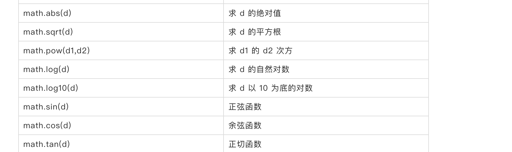

9 Exports和模板
函数是组织代码的一种有效形式，模块是比函数更大粒度的一个方式，模块将一系列相关的函数组织在一起，例如内置的 math 模块，就包含了一系列数学函数调用，

除了内置模块之外，你也可以将你的代码组织成模块的形式。
注意：模块系统需要启用** 语法****Feature.Module**。
exports
比如我们定义了一个快排的模块：
## examples/qsort.av
## Author: dennis
## Desc: a script to define a quick-sort function qsort.
fn swap(xs, l, r) {
let temp = xs[l];
xs[l] = xs[r];
xs[r] = temp;
}
fn partition(xs, l, r, p) {
while l <= r {
while xs[l] < p {
l = l+1;
}
while xs[r] > p {
r = r -1;
}
if l <= r {
swap(xs, l, r);
l = l+1;
r = r -1;
}
}
return l;
}
fn qsort0(xs, l, r) {
if l >= r {
return;
}
let p = xs[(l+r)/2];
let i = partition(xs, l, r, p);
qsort0(xs, l, i-1);
qsort0(xs, i, r);
}
qsort = lambda(xs) ->
qsort0(xs, 0, count(xs)-1);
return xs;
end;
## export qsort
exports.sort = qsort;
这是一个经典的快速排序实现， swap 函数用于交换集合两个位置的元素， partition 用于划分集合， qsort0 分别对集合的左右两部分做递归排序，最终的 qsort 函数接受一个集合 xs ，然后调用 qsort0 进行实际的排序工作。
这里特别要注意的是 exports.sort = qsort 这一行，这样就将 qsort 函数设置为公开并命名为 sort ，模块外的代码可以访问 sort 方法，它将调用 qsort 函数。没有通过 **exports** 导出的函数，将无法被模块外的代码访问。
require 和 load
定义并导出了 qsort 模块后，我们可以在模块之外这么使用：
## examples/test_qsort.av
let q = require('examples/qsort.av');
fn rand_list(n) {
let a = seq.list();
for i in range(0, n) {
seq.add(a, rand(n));
}
return a;
}
let a = rand_list(20);
println("before sorting: " + a);
q.sort(a);
println("after sorting: " + a);
我们通过 let q = require('examples/qsort.av'); 引用了模块 qsort ，接下来调用 q.sort(a) 排序随机数组 a。
使用 RunScriptExample 来跑上述例子，输出：
before sorting: [8, 12, 5, 13, 19, 3, 3, 6, 19, 18, 16, 18, 8, 13, 18, 6, 18, 2, 9, 13]
after sorting: [2, 3, 3, 5, 6, 6, 8, 8, 9, 12, 13, 13, 13, 16, 18, 18, 18, 18, 19, 19]
require(path) 用于加载 path 路径指定的模块，查找的顺序跟 AviatorEvaluatorInstance#compileScript 一样：
- 先假设 path 是绝对路径，尝试加载
- 尝试从当前线程的类加载器
ClassLoader使用getResourceAsStream(path)加载，如果未找到，则使用给 path 加上/前缀再次使用getResourceAsStream尝试查找。 - 最后，尝试从当前
AviatorEvaluatorInstance类加载器，按照第二条规则类似的方式再次查找。 - 如果都没有找到，将抛出运行时异常。
require 函数如果加载成功，将返回模块的 exports ，这样就可以调用模块的导出函数了。
除了 require 函数之外，你也可以用 load(path)函数，不同的是 load 每次都将重新编译并执行模块代码，而 require 是按照 path 做了模块缓存。假设我们修改 qsort 模块，加入一行打印：
## examples/qsort.av
## Author: dennis
## Desc: a script to define a quick-sort function qsort.
fn swap(xs, l, r) {
let temp = xs[l];
xs[l] = xs[r];
xs[r] = temp;
}
fn partition(xs, l, r, p) {
while l <= r {
while xs[l] < p {
l = l+1;
}
while xs[r] > p {
r = r -1;
}
if l <= r {
swap(xs, l, r);
l = l+1;
r = r -1;
}
}
return l;
}
fn qsort0(xs, l, r) {
if l >= r {
return;
}
let p = xs[(l+r)/2];
let i = partition(xs, l, r, p);
qsort0(xs, l, i-1);
qsort0(xs, i, r);
}
qsort = lambda(xs) ->
qsort0(xs, 0, count(xs)-1);
return xs;
end;
## export qsort
exports.sort = qsort;
## println something
println("load qsort module.");
我们继续用 require 来调用，只是重复两次：
## examples/test_qsort.av
let q = require('examples/qsort.av');
let q = require('examples/qsort.av');
fn rand_list(n) {
let a = seq.list();
for i in range(0, n) {
seq.add(a, rand(n));
}
return a;
}
let a = rand_list(20);
println("before sorting: " + a);
q.sort(a);
println("after sorting: " + a);
这样将打印：
load qsort module.
before sorting: [4, 19, 2, 15, 4, 9, 3, 1, 19, 7, 11, 2, 8, 4, 17, 1, 7, 14, 11, 14]
after sorting: [1, 1, 2, 2, 3, 4, 4, 4, 7, 7, 8, 9, 11, 11, 14, 14, 15, 17, 19, 19]
尽管我们调用了 require 两次，也只打印了一次 load qsort module. ，这就是 require 带了 module cache 的缘故。
如果我们将 require 替换为 load ：
## examples/load_qsort.av
let q = load('examples/qsort.av');
let q = load('examples/qsort.av');
fn rand_list(n) {
let a = seq.list();
for i in range(0, n) {
seq.add(a, rand(n));
}
return a;
}
let a = rand_list(20);
println("before sorting: " + a);
q.sort(a);
println("after sorting: " + a);
这次将打印两次了：
load qsort module.
load qsort module.
before sorting: [12, 19, 11, 0, 17, 13, 1, 3, 3, 0, 5, 18, 3, 13, 18, 15, 9, 6, 13, 3]
after sorting: [0, 0, 1, 3, 3, 3, 3, 5, 6, 9, 11, 12, 13, 13, 13, 15, 17, 18, 18, 19]
通常来说你都应该使用 **require** 来减少模块不必要的重新编译和加载。
MODULE
在被加载模块中，可以通过 __MODULE__ 获取当前模块的信息，包括：
path，当前模块的代码路径exports，当前模块导出的函数或者变量列表。
只有被 load 或者 require 的模块才有这 exports 和 __MODULE__ 这两个特殊变量，其中 __MODULE__.exports 指向了 exports 。
因此可以直接赋值给 __MODULE__.exports 来整体导出一个方法列表：
## examples/module.av
## a test module
let m = seq.map();
m.add = lambda(x, y) ->
x + y
end;
m.sub = lambda(x, y) ->
x - y
end;
println("module path: " + __MODULE__.path);
__MODULE__.exports = m;
我们创建了一个 map 实例 m ，并给 m 设置了两个变量 m.add 和 m.sub 分别赋值了两个函数。最后将整个 m 赋值给了 __MODULE__.exports ，这样这个测试模块导出了两个方法 add 和 sub ，我们可以这样使用它们：
## examples/test_module.av
let t = require('examples/module.av');
println(t.add(1, 2));
println(t.sub(1, 2));
这样将打印：
module path: examples/module.av
3
-1
其中第一行是在 module.av 里打印的，而 3 和 -1 是分别执行 t.add(1, 2) 和 t.sub(1, 2) 的结果。